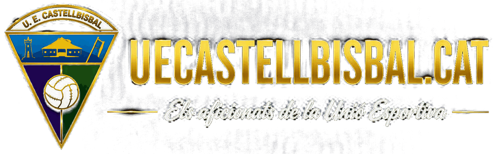
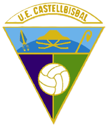
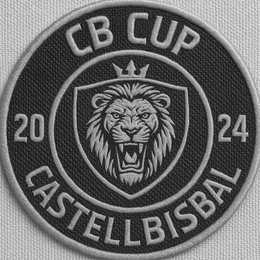
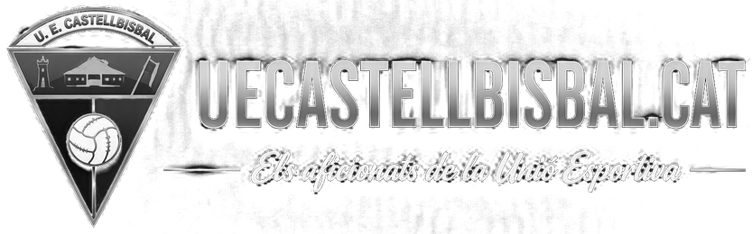

Resultado más reciente
Aún no se ha jugado ningún partido esta temporada
Cómo va la temporada
Jornada a jornada
Posición en la clasificación
Puntos por jornada
Evolución de puntos
Goles a favor / en contra por jornada
Evolución Goles a favor / en contra
Tarjetas
Temporada 2026/27
L Local V Visitante
Cargando calendario…
3ª Catalana · Grupo 12
La temporada 2026/27
Dirección deportiva
Entrenador
Carlos Rodríguez
Segundo entrenador
Juanan Fernández
Delegado
Marc Jiménez
Delegado de campo
Suñé
Entrenador de porteros
Aleix Ruiz
Capitanía
Jugadores
Portero
Defensa
Mediocentro
Delantera
Fundada en 1913, la UE Castellbisbal forma parte de la historia deportiva de Castellbisbal. Un club abierto a todos, construido gracias al esfuerzo de muchas generaciones de jugadores, socios, familias, voluntarios y colaboradores.
Jugamos como locales en el Camp de Futbol Municipal de Castellbisbal, en Carrer Major 78, 08755, Castellbisbal, Barcelona.
📍 Ver ubicación en Google MapsNuestro primer equipo compite esta temporada 2026/27 en el Grupo 12 de Tercera Catalana, la categoría organizada por la Federació Catalana de Futbol.
Acceso FCF grupo 12 de tercera catalanaCastellbisbal, corazón del Vallès Occidental. Un municipio de más de 13.000 habitantes situado junto al río Llobregat, donde historia, naturaleza, deporte y tradición conviven a pocos minutos de Barcelona. Desde el emblemático Puente del Diablo hasta sus espacios naturales y su intensa vida asociativa, Castellbisbal ofrece una identidad única que combina pasado, presente y futuro.
Castellbisbal en cifras
Situado en un punto estratégico entre Barcelona y el interior de Cataluña, Castellbisbal combina tradición, entorno natural e importante actividad industrial y logística. El municipio se encuentra en la confluencia del río Llobregat y la riera de Rubí, lo que ha convertido el territorio en un lugar de paso y asentamiento desde épocas muy antiguas.
⭐ Top 10 lugares imprescindibles de Castellbisbal
El gran icono de Castellbisbal. Este histórico puente de origen romano formó parte de la antigua Vía Augusta y es uno de los monumentos más emblemáticos del Baix Llobregat y el Vallès.
La calle más representativa del municipio. Pasear por el Carrer Major es descubrir la esencia de Castellbisbal, con sus comercios, terrazas y el ambiente cotidiano de la vida local.
El auténtico corazón del pueblo. Un espacio de encuentro para vecinos y visitantes donde se celebran actos, fiestas y eventos que forman parte de la identidad de Castellbisbal.
Templo histórico que preside el centro urbano y constituye uno de los principales referentes patrimoniales del municipio.
Vestigio del pasado medieval de Castellbisbal y testimonio de la importancia estratégica que tuvo el territorio a lo largo de la historia.
Un espacio natural privilegiado para caminar, correr, ir en bicicleta o simplemente disfrutar de la naturaleza a pocos minutos del casco urbano.
También llamada Salt de la Botzegada, es un rincón natural e insólito de Castellbisbal. Un paraje húmedo en el curso del torrente de Pegueres, famoso por albergar una pequeña cascada que fluye con mayor intensidad en épocas de lluvia.
Zonas como Can Costa, Can Santeugini o Comte de Sert ofrecen tranquilidad, naturaleza y algunas de las mejores vistas sobre el municipio y el valle del Llobregat.
Las impresionantes infraestructuras ferroviarias de Castellbisbal se han convertido en una seña de identidad del paisaje local, reflejando la importancia logística y de comunicaciones del municipio.
La casa de la UE Castellbisbal y uno de los principales puntos de encuentro deportivo del municipio, donde cada fin de semana se reúnen generaciones de aficionados para vivir el fútbol local.
Naturaleza y deporte
Identidad y tradiciones
Castellbisbal es conocido por sus fiestas populares, su fuerte tejido asociativo y su sentimiento de pertenencia. Destacan:
Gracias por vuestro apoyo
Patrocinadores
Empresa Tecnológica
Colaboradores
Amigos del club



¿Quieres que colaboremos?
Espacio para empresas, comercios y entidades
Disponemos de un programa de colaboración pensado para sumar patrocinadores, colaboradores y amigos del club a nuestro proyecto. Queremos construir relaciones duraderas con entidades que compartan nuestros valores y quieran formar parte de nuestro camino.
Además de las propuestas recogidas en el programa, estamos abiertos y somos flexibles ante cualquier otro tipo de colaboración que pueda surgir. Creemos que cada entidad puede aportar de una manera diferente y estamos dispuestos a encontrar juntos la fórmula que mejor encaje.
Espacio para personas
Necesitamos personas con ganas de participar, aportar y sentirse parte de nuestro proyecto. Una entidad no puede crecer y funcionar como queremos sin contar con su gente, su comunidad y su afición.
Porque, al final, las entidades están formadas por personas. Por eso queremos que quienes forman parte del club no sean solo espectadores, sino protagonistas de todo lo que construimos juntos.